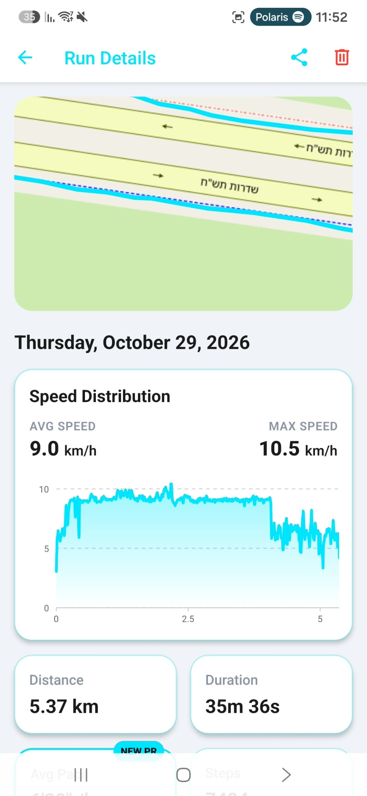
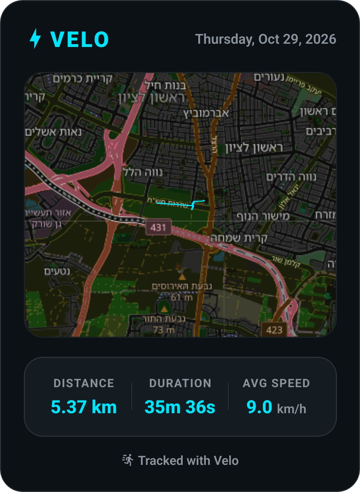
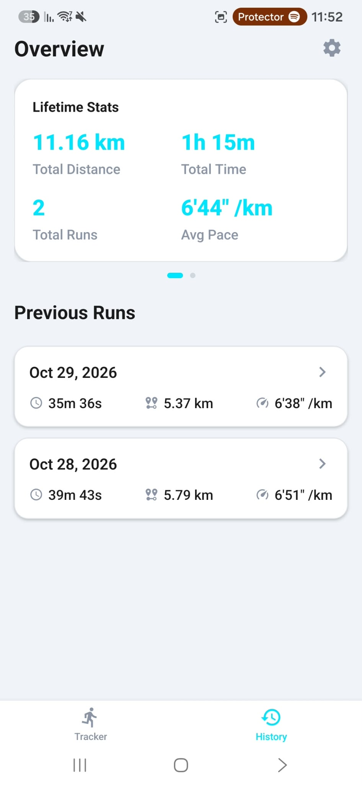
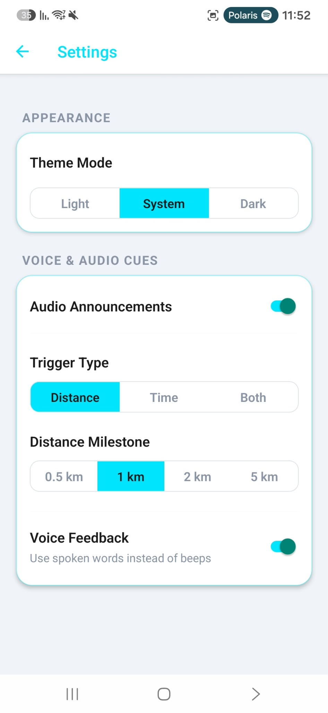

How It Actually Works
Every screen was field-tested while running to ensure clear typography, zero false clicks, and effortless control:

1. Live Running Dashboard
Giant glanceable numbers for time, pace, and steps. Android system bars are hidden during tracking so you never swipe out of the app mid-sprint.
2. Fast Launch & GPS Lock
Confirms satellite accuracy and checks battery levels before you step out. No waiting for server syncs—one tap on START and the timer begins.

3. Speed Curves & PR Badges
See exactly where you pushed your limits with an interactive touchable speed graph. Broken records get highlighted with a glowing electric cyan badge.

4. Instant Story-Ready Share Card
Instead of an ugly screenshot full of buttons and status bars, VELO silently renders a dedicated high-res card with your route, pace, and time ready for Instagram.

5. History & Quick Long-Press Delete
Swipe through total mileage and all-time records. Accidentally started a run while sitting on the couch? Long-press any entry to delete it instantly.

6. Audio Updates in Your Headphones
Keep your eyes on the road. Set customizable audio announcements every kilometer so you always know your pace and split without pulling your phone out.